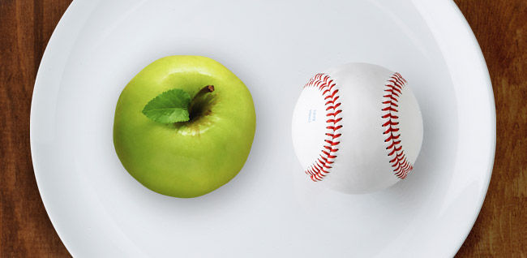
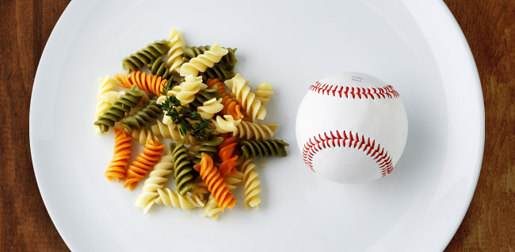
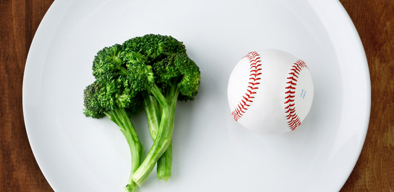
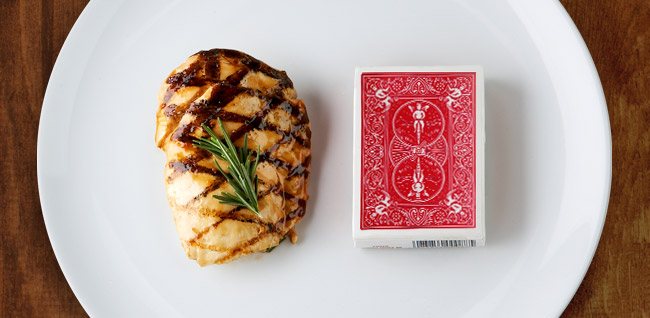
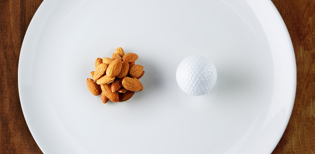

Diana's Meal Plan One on One Year Plan
Cardio Table
Weight Lifting Table
CARDIO ONLY OR REST - MONDAY, TUESDAY & WEDNESDAY
Meal:
Time:
Protein Amount:
Veggie Amount:
Healthy Fat Amount:
Healthy Carb Amount:
Workout Carb Amount:
Meal 1
~7:00 AM (waking)
4oz any lean protein source
2 small handfuls greens
1 serving healthy fats
None
None
Meal 2
~11:00 AM (3-5 hours after last meal)
4oz any lean protein source
2 small handfuls greens
1 serving healthy fats
20 g healthy carbs
None
Meal 3
~3:00 PM (3-5 hours after last meal)
4oz any lean protein source
2 small handfuls greens
1 serving healthy fats
20 g healthy carbs
None
Meal 4
~7:00 PM (3-5 hours after last meal)
4oz any lean protein source
2 small handfuls greens
1 serving healthy fats
20 g healthy carbs
None
Meal 5
~11:00 PM (Bedtime)
20g casein protein in water
None
1.5 servings healthy fats
None
None
WEIGHTS - **FEBRUARY**MONDAY, TUESDAY, WEDNESDAY & FRIDAY (1 HOUR TOTAL)
Meal:
Time:
Protein Amount:
Veggie Amount:
Healthy Fat Amount:
Healthy Carb Amount:
Workout Carb Amount:
Meal 1
~5:00/5:30 AM (Drink 2/3 of workout shake upon waking, 1/3 during workout)
20g whey protein in water
None
None
None
25g workout carbs
Meal 2
~7:00 AM (20 minutes after workout is over)
3oz any lean protein source
2 small handfuls greens
1/2 serving healthy fats
40 g healthy carbs
None
Meal 3
~10:30 AM (2-4 hours after last meal)
3oz any lean protein source
2 small handfuls greens
1/2 serving healthy fats
20 g healthy carbs
None
Meal 4
~2:30 PM (3-5 hours after last meal)
3oz any lean protein source
2 small handfuls greens
1/2 serving healthy fats
20 g healthy carbs
None
Meal 5
~6:00 PM (3-5 hours after last meal)
3oz any lean protein source
2 small handfuls greens
1/2 serving healthy fats
20 g healthy carbs
None
Meal 6
~9:30 PM (Bedtime)
20g casein protein in water
None
1 servings healthy fats
None
None
Quick Tips
Travel Tips
Dining Out Tips
QUICK TIPS
There is no need to worry about crossover calculations on the templates for the fat in protein sources, carbs in fat sources, etc. You just focus on hitting the amounts listed PER column. The rest has been factored in by the expert team at RP. This is designed for simplicty's sake, making things easier to follow and an easier diet generally yields better long term results.
When measuring amounts on the templates, protein is total weight (3oz protein =18g WORTH of protein), fats are measured in the amount of fat (1 serving of fat = 15g WORTH of fat), and carbs are measured in the AMOUNT of carbs, NOT the total weight (100g TOTAL weight of carbohydrate for sweet potato only yields about 25g WORTH of carbohydrates).
We do NOT recommend starting the diet templates until you have read the "how to use the diet templates" document, have watched the "how to" video AND have read the extensive diet FAQ document. Here is a helpful walkthrough video by Dr. Jen Case - youTube
Be sure to join the RP Clients group on Facebook. Our group has over 10,000 members and tons of veterans of RP that can help! Use the link here to join: Facebook Group
If you have any issues with casein protein, the FAQ recommends some alternatives ranked in order of best to worst (other dairy products, then any lean protein source, then last is just whey).
If you find that you're hungry upon starting the templates, that's 100% normal as you get used to not eating whenever you want, but have a more set scientific meal timing schedule. Most people's hunger levels adjust at least somewhat after several days.
If you find yourself hungry, use higher volume foods (ex - nuts instead of oils, sweet potatoes vs rice). The opposite applies if you are full or don't find yourself overly hungry; use lower volume foods to help reduce overall food volume.
If you want to use foods NOT listed on the RP spreadsheet, it's very likely ok to do so. Our best recommendation to do is to simply count all macros from those meals towards your specific meal. It does complicate things a bit, and generally it's easier to eat most of the foods provided if simplicity is your goal.
Tips for dining out
Here are some key words to look for to help you choose the lower calorie, lower fat options on the menu. www.calorieking.com is a great website that has the nutritional information for most restaurants
WORDS TO CHOOSE
Baked
Broiled
Boiled
Fat Free
Fresh
Garden Fresh
Grilled
light
Marinated
Poached
Red Sauce
Reduced
Roasted
Seasoned
Steamed
Vegetarian
Vinaigrette
PROTEIN CHOICE
Cuts on meat with "loin" in the name
Roast - chuck, rib or rump
Steak - cubed, flank, porterhouse, skirt, sirloin, tenderloin, T-bone
Pork - tenderloin, chops, ham, Canadian bacon
Poultry - skinless, white meat
Fish – any, just not fried
Egg white or egg substitute
HEALTHY SIDE OPTIONS
Baked potato
Baked sweet potato
Rice
Green beans
Cooked carrots
Asparagus
Cottage cheese
TRAVEL TIPS
1.) Get in at least 4 servings of protein per day, 2-3 servings of veggies, and 2-3 servings of fats.
2.) Spread out the above mentioned every 4-5 hours.
3.) Carry protein bars, jerky snacks (listed below) and protein shakes to help get in the meals. Be sure to take protein powder with you (in small sized bags if needed).
4.) Almost all nicer restaurants have low carb options. Chicken breast, fish, or steak with steamed veggies is an ideal meal choice.
5.) All nicer restaurants SHOULD be able to custom make any lean meat with no additives (sauces, etc).
6.) Worse case, if lean meats at restaurant cannot be custom ordered, eat the meat with the oils on it (counts as fats) and eat veggies for a low carb meal.
7.) Remember, this is where true results are made, it will be very hard. Have a plan in place and you will stay on track!
Here's a list of foods you can use, just pick your favorites.
Lean Proteins
Any fish (tuna, salmon, etc.…)
Any seafood (shrimp, scallops etc.)
Chicken breast
Turkey breast
Any meat 90% or leaner
Egg whites
3oz of lean meat ≈ 18g of protein
4oz of lean meat ≈ 24g of protein
Healthy Fats
Any Nuts
Natural nut butter
Olive Oil
Avocados
1 serving ≈ 15g fat
carbohydrates
Quinoa
Oatmeal
Whole grain pasta
Whole grain bread
Sweet potatoes
Any Rice
Any fruit
Vegetables
Any dark green veggies
Onions
Peppers
Portobello mushrooms
Zucchini
Broccoli
Spinach
Lettuce
Tomatoes
Green Peppers
Asparagus
Cabbage
Cauliflower
Celery
Cucumber
Brussels Sprouts
Green Beans
Yellow Squash
1 small handful ≈ 1 cup
Work Out Carbs
Powder Gatorade (highly recommended)
Tang
Koolaid
Lemonade Powder
Suplements
Whey Protein
casein Protein
*For frame of reference in regard to serving sizes per meal, please view the pictures below.
Additional Notes
1 cup of COOKED pasta ≈ 40g carbs
1 cup of COOKED rice ≈ 40g carbs
1 cup of COOKED oatmeal ≈ 40g carbs
1 medium sized apple/orange/banana ≈ 25g carbs

Ex. - 1 medium sized apple

Ex. - 1 medium sized apple

Ex. - 1 medium sized apple

Ex. - 1 medium sized apple

Ex. - 1 medium sized apple